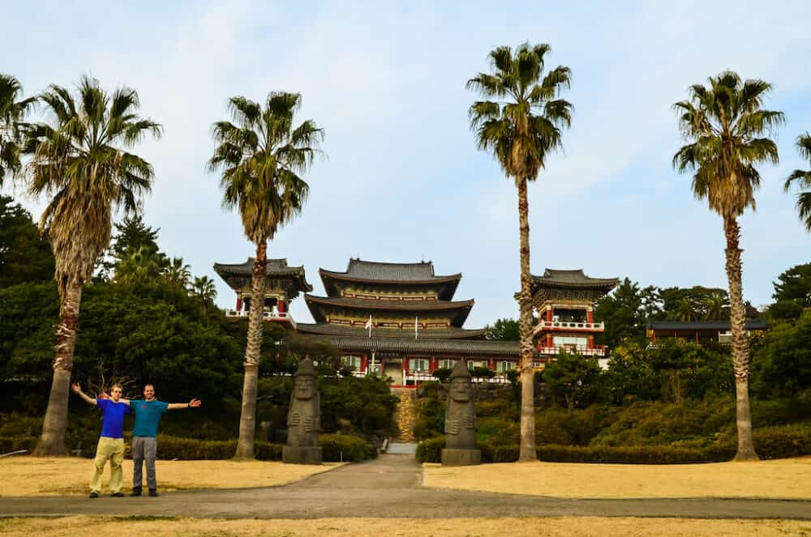
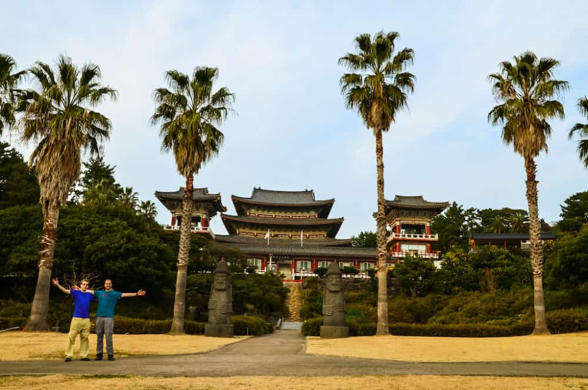
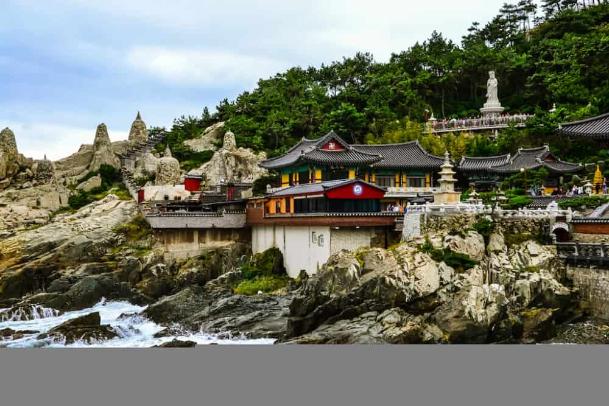
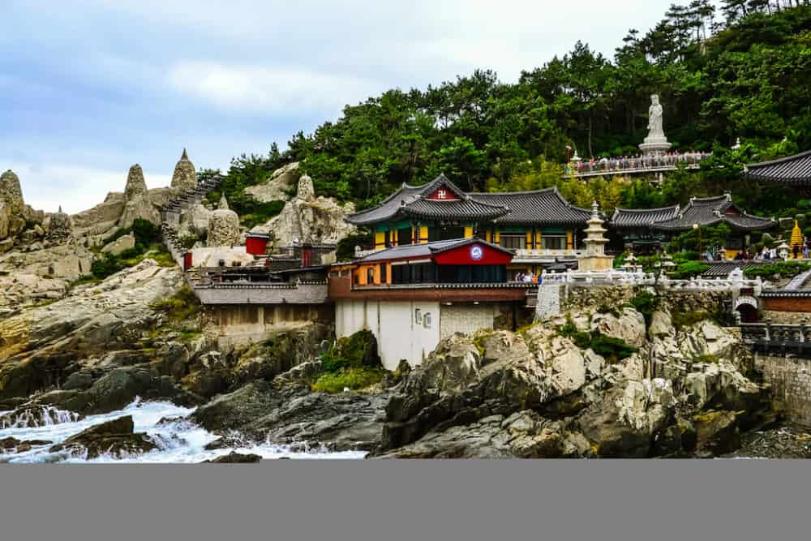
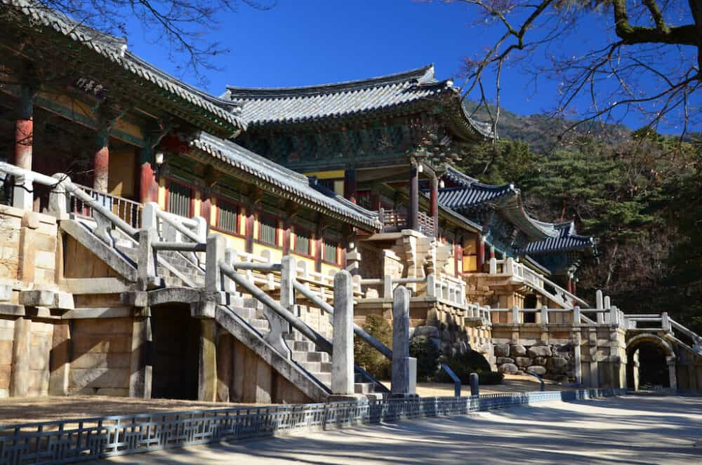
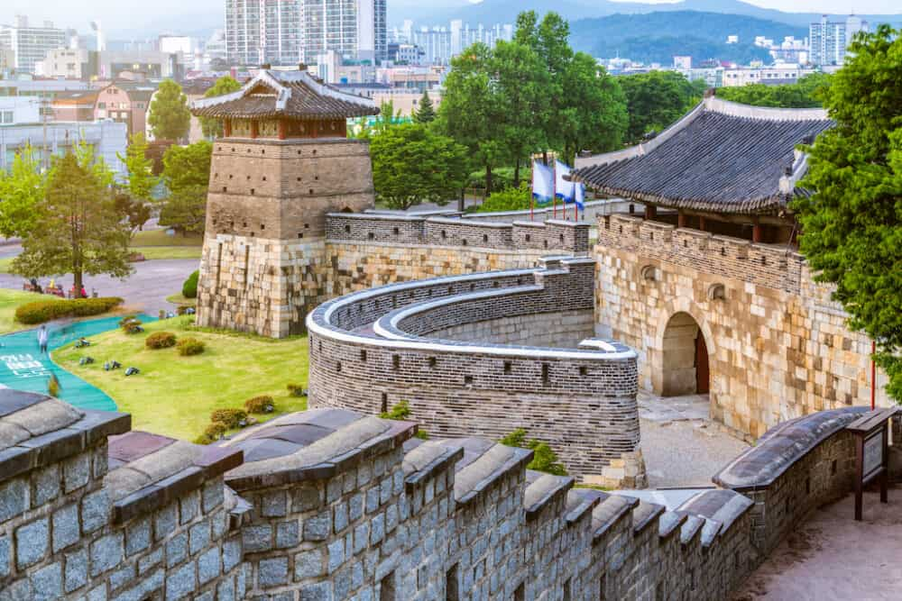
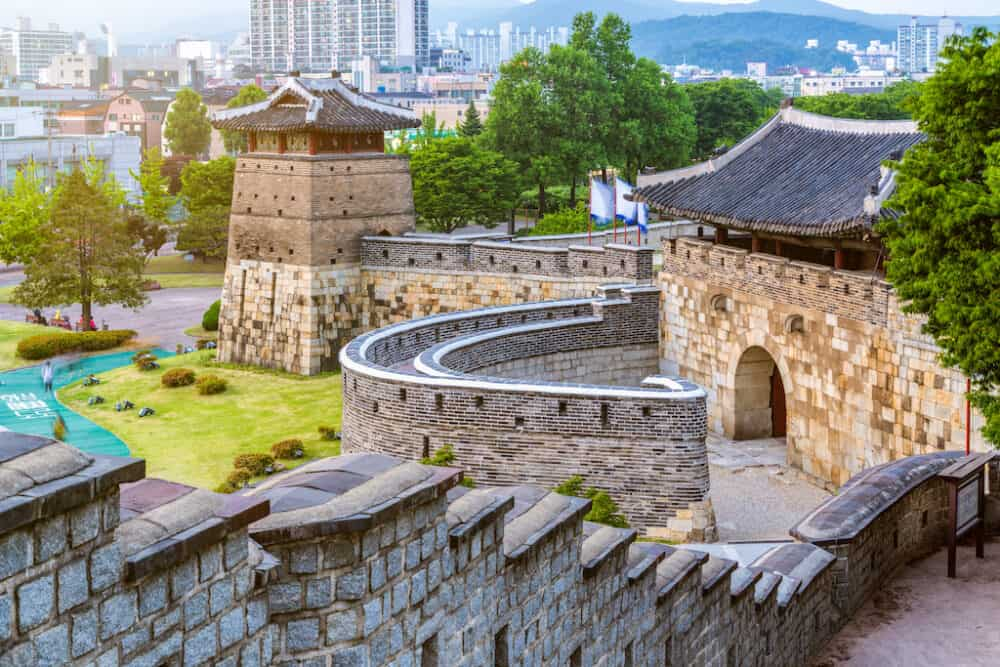
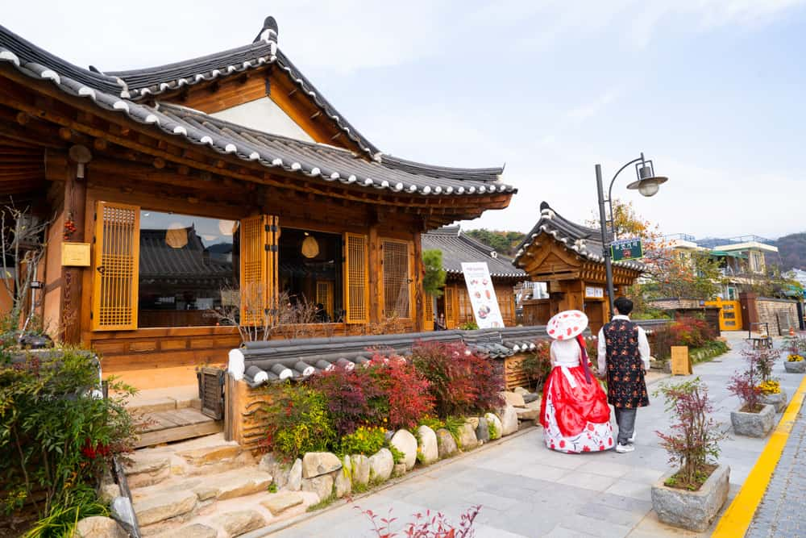

KOREA
  1.Mount Hallasan – the highest peak in all of South Korea. This volcano rises to a height of 1947 meters. The hike is 9.6 km long in one direction. It takes all day to complete.
 1.Mount Hallasan – the highest peak in all of South Korea. This volcano rises to a height of 1947 meters. The hike is 9.6 km long in one direction. It takes all day to complete. 2.Seongsan Ilchulbong – this round-shaped mountain is in most of the photos from Jeju Island. It is often called the “Sunrise peak” because there are amazing sunsets.')">
 
Be sure not to miss:
1.Busan Tower – amazing view from the tower of the whole Busan city and the surrounding coast.
2.Gamcheon Culture Village – a colorful cultural village where you can see a lot of interesting street art.
3.Haedong Yonggungsa – a beautiful Buddhist temple built on cliffs by the sea on the edge of Busan.')"> 
Be sure not to miss:
1.Bulguksa Temple – one of the most beautiful temples in South Korea, built in 751 AD.
2.Anapji Pond – breathtaking in the evening because it’s illuminated and the pond serves as a mirror.
3.Tumuli Park – park, where you can find 20 ancient tombs.
4.Seokguram Grotto – beautiful man-made cave temple.')">
 
Places you shouldn’t miss in Suwon:
1.Hwaseong Fortress – one of the largest Korean fortresses with significant historical and architectural importance.
2.Baegun Lake – lake full of hiking trails.
3.Gyeonggi Arts Center – a great place to visit for art enthusiasts with regularly hold art exhibitions, shows, and performances.')"> 
1.Gyeonggijeon Shrine – shrine surrounded by many monuments and historical buildings.
2.Jeonju Hanok Village – a scenic area with picturesque fountains, pavilions, and statues.
3.Jeondong Catholic Church – one of the largest and most beautiful catholic churches in South Korea.')">